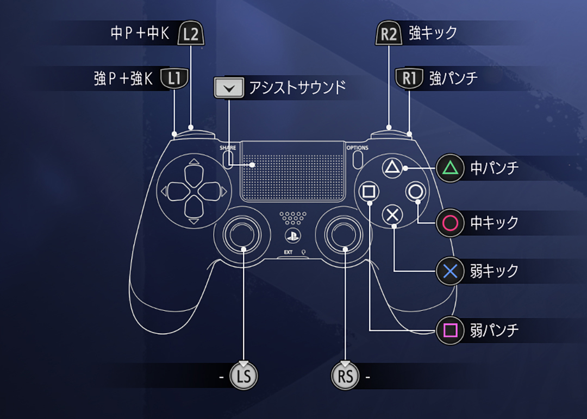
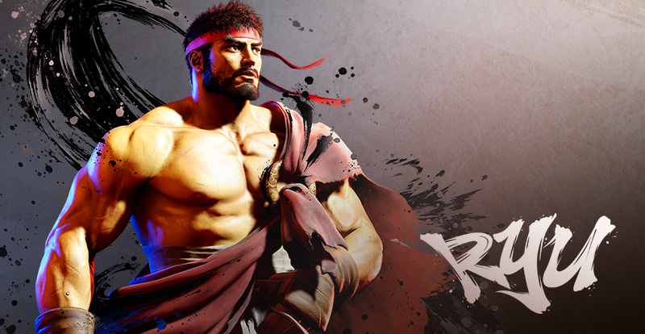

|
 |
|||
| 技名 | 入力 | 説明 / 備考 | カテゴリ / メモ |
|---|---|---|---|
| 昇龍拳 | → ↓ ↘ + P |
強烈なアッパーと共に飛び上がる技。 昇龍拳は相手のジャンプ攻撃に対して無敵となる。 |
必殺技近距離 |
| 波動拳 | ↓ ↘ → + P | 前方に気弾を飛ばす技。離れた間合いから攻撃する手段として有効。 | 必殺技遠距離 |
| 竜巻旋風脚 | ↓ ↙ ← + K | 前進する連続回し蹴りを繰り出す技。相手を吹き飛ばすことに長けた回転蹴り。
ジャンプ中に繰り出すことも出来る。 ジャンプの軌道を変えたり空中からの奇襲に長けた技。 |
必殺技中距離～近距離 |
| 上段足刀蹴り | ↓ ↘ → + K | 素早く間合いを詰める突進蹴り。相手の攻撃の隙を突いたり奇襲を狙える蹴り技、 蹴り足の先端を相手に当てるように繰り出すと有効。 |
必殺技近距離 |
| 真空波動拳 | ↓ ↘ → ↓ ↘ → + P | 掌に体内の気を集中させ、圧縮して放つ波動拳。 攻撃の出が早く、無敵もあるので切り返しとしても使える。 |
スーパーアーツ1中距離 |
| 真・昇龍拳 | ↓ ↘ → ↓ ↘ → + K | 近距離で繰り出す高威力の昇龍拳。相手の急所を狙い確実に倒す切り札。 | スーパーアーツ3近距離 |